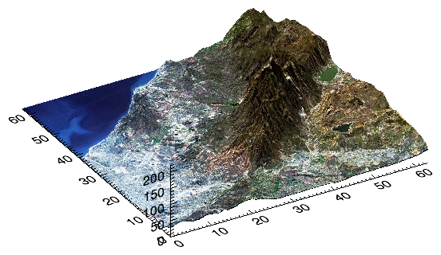

The Scale method scales a graphic item in the X, Y, or Z dimensions.
p = PLOT(RANDOMU(seed, 20))
p.Scale, 0.5, 0.3
; Need to reset rotation before scaling.
s = SURFACE(/TEST)
s.Rotate, /RESET
s.Scale, 1.5, 1.5, 0.5
s.Rotate, /DEFAULT
graphic.Scale, X, Y, Z
The scaling factors for the X, Y, and Z dimensions. X, Y, and Z should be greater than 0. A value of 1 indicates no scaling. If Z is not supplied then the default is 1.
Set this keyword to 1 to reset the scale factors to 1.0 before performing any scaling. If RESET is specified then X, Y, and Z are optional.
|
8.0 |
Introduced |